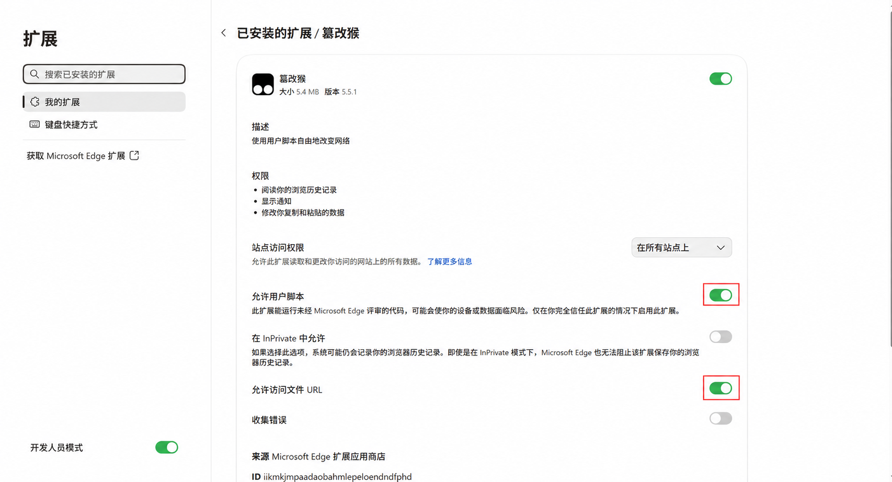
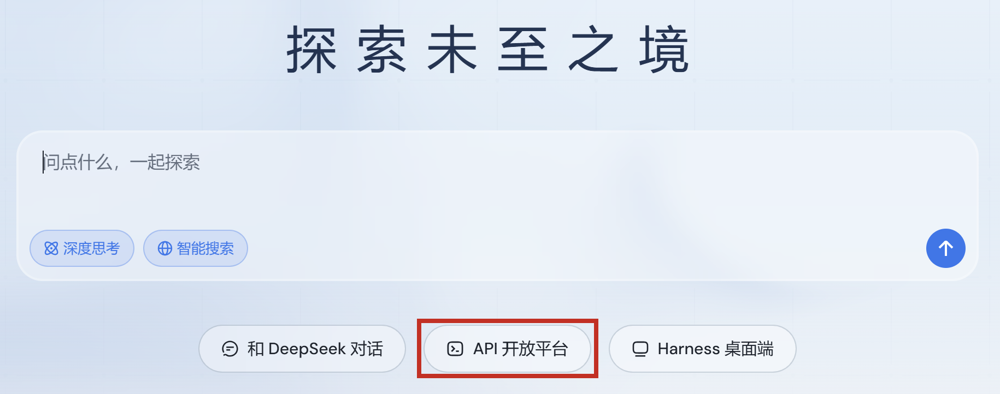
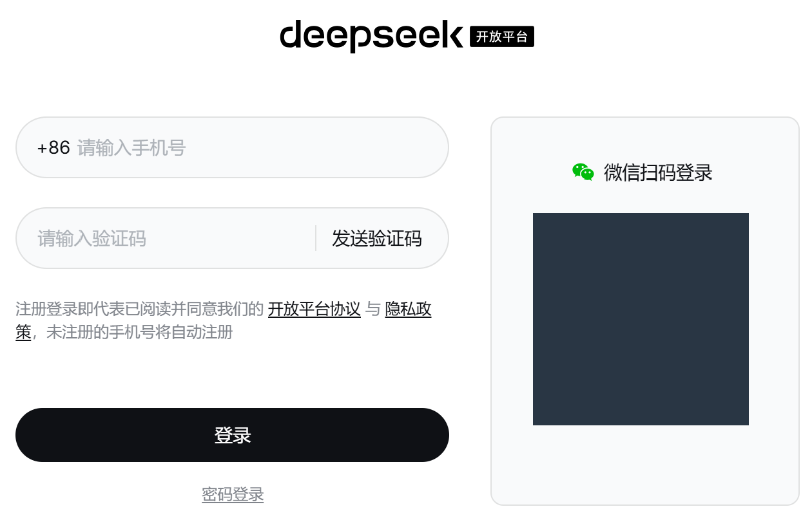
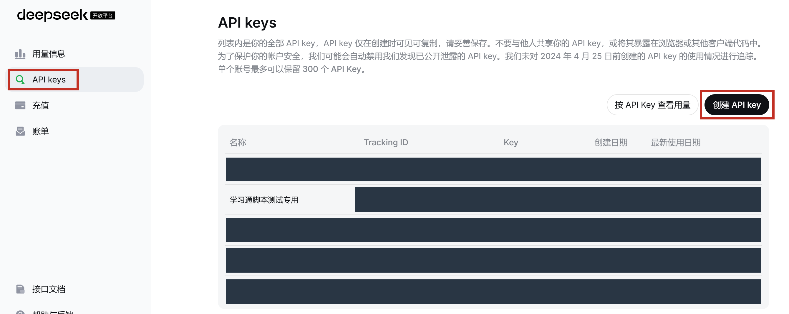
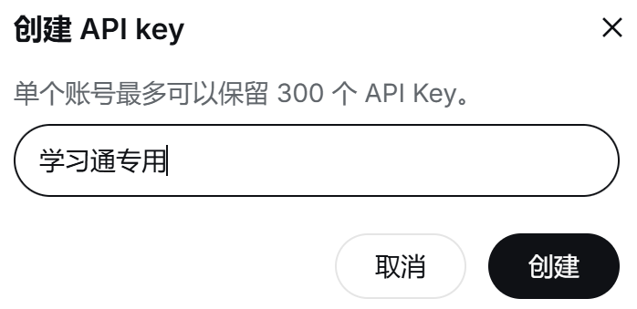
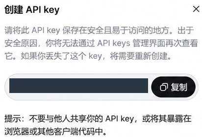
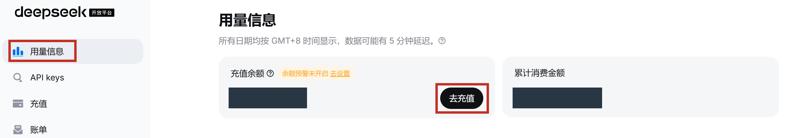
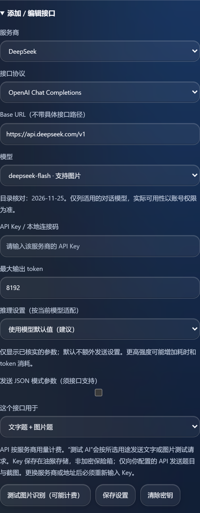

先装油猴
在电脑浏览器安装 Tampermonkey（油猴）。Chrome、Edge、Firefox 都可以按扩展商店的提示安装；本教程以电脑浏览器为主。
打开浏览器的扩展管理，找到油猴的详情页，确认允许用户脚本已开启。浏览器没有这个开关时，按油猴自己的提示检查权限。

安装学习助手
打开脚本安装地址，等油猴弹出确认页，再点“安装”或“更新”。如果只是打开了代码页面，没有出现油猴确认页，用下面的备用方法。
安装按钮打不开：用 ZIP 覆盖安装
- 从最新正式版下载源码 ZIP 并解压。
- 用记事本打开
dist/xuexitong-ai-assistant.user.js，按 Ctrl+A、Ctrl+C 复制全部内容。 - 首次安装：油猴图标 → 添加新脚本 → 全选替换默认代码 → Ctrl+S 保存。已有脚本：进入原脚本编辑页，替换全部代码后保存。
源码 ZIP 不是油猴备份包，不要用“导入备份”安装。更新时保留原脚本，避免丢掉设置。
只启用一份控制同一课程的脚本。以前装过 BG、FACE、PREVIEW 等测试脚本的，先把它们停掉。
进入一条具体小节
- 打开学习通，进入自己的课程。
- 点击“章节”，再点击“1.1”“1.2”这样的小节名称。
- 正文出现视频、文档或测验后，查看右下角的“学习助手”。安装前就打开的页面，需要刷新。
课程首页和章节目录没有学习面板。大章旁的箭头只负责展开目录，要点击里面的小节名称。


只看视频、读文档
在面板选择不接入 AI，然后点开始自动。不用填 Key，也不会发送模型请求。
这个模式处理音视频和已识别的阅读任务。遇到需要答题的内容，会按当前处理规则记录和接续；需要最后查看待复核项。
运行时让课程标签保持在前台，电脑不要休眠。具体规则见音视频和阅读。
需要 AI 辅助答题
- 打开面板的“接口”区，选择接入 AI。
- 添加服务商、地址、模型和自己的 API Key，选择文字或图片用途，保存。
- 点“测试 AI”，确认对应用途通过，再点“开始自动”。
文字题和图片题可以分别配置。不会填接口时，从接入 AI开始；用电脑上的 Codex 时，打开本地 Codex 连接；用 WorkBuddy 对应账号连接时，打开WorkBuddy / CodeBuddy。
测试也会调用模型，可能产生费用。通过连接测试不代表每道题都能答对。
第一次配 AI？跟着图接入 DeepSeek Flash
平时只做些文字题，可以先选 DeepSeek Flash。它的输入、输出单价都比 Pro 低，按实际用量扣费。先拿 5 元试用，用完再充就行。能用多久取决于题量、题目长度和模型写了多少。只看视频或读资料时，可以直接用「不接入 AI」模式。查看 DeepSeek 官方价格
1. 打开 DeepSeek 开放平台
打开 DeepSeek 官网，点首页的「API 开放平台」。还没登录的话，先用自己的账号登录。



2. 创建 API Key，当场复制
登录后，从左侧打开「API keys」，点右侧「创建 API key」。名字可以填「学习通专用」，方便以后认出来，再点「创建」。




3. 余额不足时，先充一小笔
点左侧「用量信息」，再点「去充值」。如果页面允许，第一次充 5 元就可以开始试用。充值金额以页面可选项为准。用过几次后，回来这里看看余额和消耗，再决定要不要补充。


4. 把 DeepSeek Flash 接进脚本
- 回到学习通，打开一个具体小节。在学习助手的「接口」区选「接入 AI（自动答题）」，展开「添加 / 编辑接口」。
- 服务商选 DeepSeek，接口协议用 OpenAI Chat Completions，Base URL 保留脚本预填的
https://api.deepseek.com/v1。模型选deepseek-flash。下拉框里找不到时，选手动填写，再填同一个模型 ID。 - 把刚复制的 Key 粘进「API Key / 本地连接码」，在「这个接口用于」选「文字题＋图片题」，点「保存设置」。推理、最大输出等先用默认设置。
- 点面板上方的「测试 AI」。脚本会分别测文字和图片，确认两项都通过后，再点「开始自动」。


如果提示 401，回到开放平台核对 Key，重新复制时留意有没有多余空格。如果提示 402，先检查余额。DeepSeek 官方错误码说明
学校域名设置
学校自有域名上的课程页不显示面板时，先覆盖安装最新版，只启用一份脚本，然后分别设置：
- 在能运行脚本的学习通页面停止自动运行。打开油猴菜单中的「学校域名设置」，每行填写一个实际来源，例如
https://mooc1.school.example。只填协议和主机。HTTP、HTTPS 和不同子域名分别设置。 - 进入油猴管理面板，打开本脚本「设置 → 包含/排除 → 用户匹配」，增加例如
https://mooc1.school.example/*的对应规则，保留原始匹配项。 - 保存并刷新相关页面。若已知题目或文档实际使用另一个学校来源，也要分别批准和匹配。核对面板后再手动开始。
示例里的主机要换成学校实际使用的主机。请勿复制带个人参数的完整课程地址。HTTP 兼容保留原站点的传输属性。使用本地 Codex 或 WorkBuddy 桥接时，还要按页末仓库说明单独配置桥接允许的学校来源。
以后怎么更新
从旧仓库装过脚本的用户，请用上面的新安装地址覆盖原脚本，保留原脚本及设置。
点学习助手右上角的更新图标，或在油猴管理面板里对本脚本执行“检查更新”。最终仍要在油猴确认页点“更新”，再刷新学习页核对版本。
中转页可能需要等待一分钟左右，网络慢时更久；出现确认页前不要急着关闭。数分钟仍没有反应，再按上面的 ZIP 方法覆盖原脚本。
检查更新失败不会调用 AI，也不代表课程已经停止。完整更新说明保留在仓库文档。